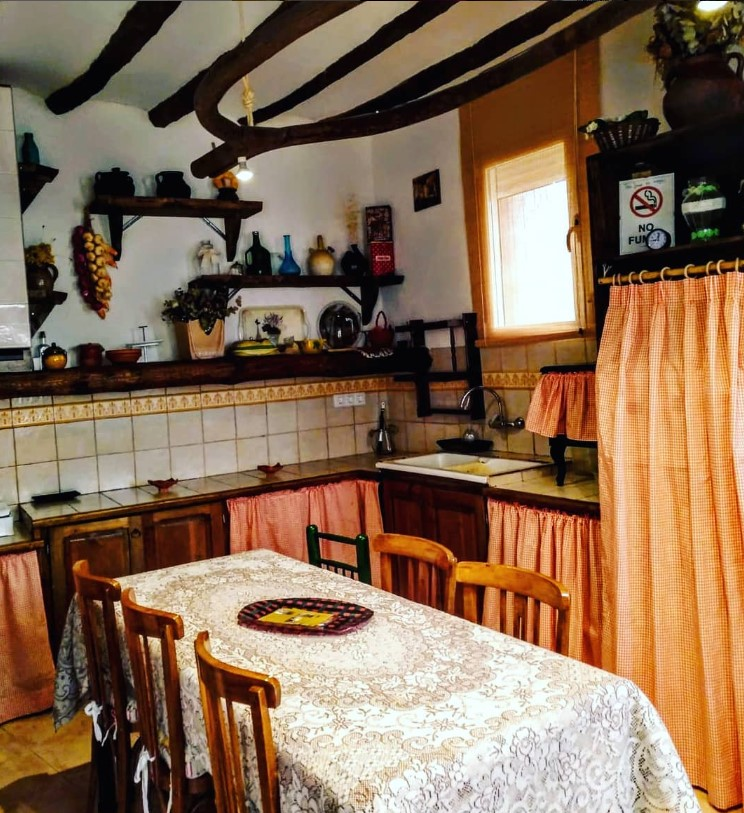
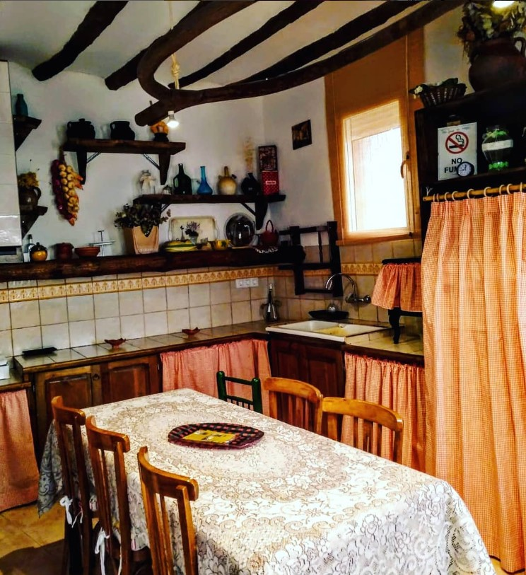

Casa Elina I
 

Casa Elina I es ideal tanto para grupos grandes como para escapadas románticas.
Ideal para familias y grupos que buscan descanso y naturaleza.
Dispone de chimeneas, cocina equipada y cinco habitaciones.
Está decorada con objetos tradicionales de labranza, que evocan el pasado agrícola de la zona.